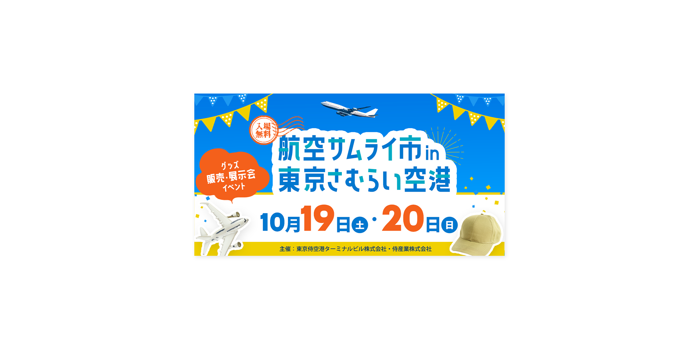

空港での展示会イベント広告バナー
二日間行われるイベントの集客用バナー制作物です。
イベント為、ワクワクするようなバナーであり、どの年代にも好まれるようなデザインにするようにデザイン設計しました。
参考チラシの中で何を伝えると良いか、テキストの内容を選別。要望の文章だけでは何のバナーなのか伝わりにくいと感じた為、「イベントグッズ販売」や、「入場無料」の要素を追加しました。
- ターゲット
- 飛行機や空港に興味のある２０代から６０代の男女
- 目的
- イベント集客の為。
- カラー
- フォント
- バナナスリップ/BD Supper
- イメージ
- ワクワク 明るい ポップ
- 制作期間
- デザイン：2日
- 制作ツール
- Adobe Photoshop
空港のバナーの為、青空を基調をした配色で個性的なフォントの見出しを使用し、一番に目線がいくように配色の加工もおこないました。 どの年代でも好まれるように、彩度の高い鮮やかなバナーにしました。アクセントカラーにはブルーの補色のオレンジを使用しました。 何のイベントかわかりやすいように、グッズの写真を下部に配置し文言を追加しました。 グッズの写真を境界線で囲むことで、ポップな印象にしました。